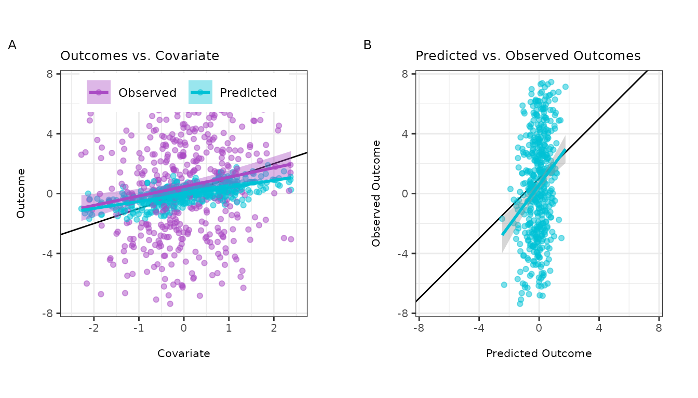

Introduction
Background
With the rapid advancement of artificial intelligence and machine learning (AI/ML), researchers from a wide range of disciplines increasingly use predictions from pre-trained algorithms as outcome variables in statistical analyses. However, reifying algorithmically-derived values as measured outcomes may lead to biased estimates and anti-conservative inference (Hoffman et al., 2023). The statistical challenges encountered when drawing inference on predicted data (IPD) include:
- Understanding the relationship between predicted outcomes and their true, unobserved counterparts
- Quantifying the robustness of the AI/ML models to resampling or uncertainty about the training data
- Appropriately propagating both bias and uncertainty from predictions into downstream inferential tasks
Several works have proposed methods for IPD, including
post-prediction inference (PostPI) by Wang et
al., 2020, prediction-powered inference (PPI) and PPI++ by Angelopoulos
et al., 2023a and Angelopoulos et al., 2023b,
and post-prediction adaptive inference (PSPA) by Miao et al., 2023. To enable
researchers and practitioners interested in these state-of-the-art
methods, we have developed ipd, a open-source
R package that implements these methods under the umbrella
of IPD.
This vignette provides a guide to using the ipd package,
including installation instructions, examples of data generation, model
fitting, and usage of custom methods. The examples demonstrate the
package’s functionality.
Notation
Following the notation of Miao et al., 2023, we assume we have the following data structure:
- We have two datasets: a labeled dataset, , and an unlabeled dataset, . The labeled set is typically smaller in size compared to the unlabeled set.
- We have access to an algorithm that can predict our outcome of interest .
- Our interest is in performing inference on a quantity such as the outcome mean or quantile, or to recover a downstream inferential (mean) model:
where is a vector of regression coefficients and is a given link function, such as the identity link for linear regression, the logistic link for logistic regression, or the log link for Poisson regression. However, in practice, we do not observe in the ‘unlabeled’ subset of the data. Instead, these values are replaced by the predicted . We can use methods for IPD to obtain corrected estimates and standard errors when we replace these unobserved by .
Installation
To install the development version of ipd from GitHub, you can use the
devtools package:
#-- Install devtools if it is not already installed
install.packages("devtools")
#-- Install the ipd package from GitHub
devtools::install_github("ipd-tools/ipd")Usage
We provide a simple example to demonstrate the basic use of the
functions included in the ipd package.
Data Generation
The ipd packages provides a unified function,
simdat, for generating synthetic datasets for various
models. The function currently supports “mean”, “quantile”, “ols”,
“logistic”, and “poisson” models.
Function Arguments
-
n: A vector of size 3 indicating the sample size in the training, labeled, and unlabeled data sets. -
effect: A float specifying the regression coefficient for the first variable of interest (defaults to 1). -
sigma_Y: A float specifying the residual variance for the generated outcome. -
model: The type of model to be generated. Must be one of"mean","quantile","ols","logistic", or"poisson".
The simdat function generate a data.frame with three
subsets: (1) an independent “training” set with additional observations
used to fit a prediction model, and “labeled” and “unlabeled” sets which
contain the observed and predicted outcomes and the simulated features
of interest.
Generating Data for Linear Regression
We can generate a continuous outcome and relevant predictors for
linear regression as follows. The simdat function generates
four independent covariates,
,
,
,
and
,
and the outcome:
where effect is one of the function arguments and
,
with sigma_Y being another argument. Here, the
simdat function generates three subsets of data, a
“training” subset, a “labeled” subset, and an “unlabeled” subset, based
on the sizes in n. It then learns the prediction rule for
the outcome in the “training” subset using a generalized additive model
and predicts these outcomes in the “labeled” and “unlabeled”
subsets:
#-- Generate a Dataset for Linear Regression
set.seed(123)
n <- c(10000, 500, 1000)
dat_ols <- simdat(n = n, effect = 1, sigma_Y = 4, model = "ols")
#-- Print First 6 Rows of Training, Labeled, and Unlabeled Subsets
options(digits=2)
head(dat_ols[dat_ols$set_label == "training",])
#> X1 X2 X3 X4 Y f set_label
#> 1 -0.560 -0.56 0.82 -0.356 -0.15 NA training
#> 2 -0.230 0.13 -1.54 0.040 -4.49 NA training
#> 3 1.559 1.82 -0.59 1.152 -1.08 NA training
#> 4 0.071 0.16 -0.18 1.485 -3.67 NA training
#> 5 0.129 -0.72 -0.71 0.634 2.19 NA training
#> 6 1.715 0.58 -0.54 -0.037 -1.42 NA training
head(dat_ols[dat_ols$set_label == "labeled",])
#> X1 X2 X3 X4 Y f set_label
#> 10001 2.37 -1.8984 0.20 -0.17 1.40 3.24 labeled
#> 10002 -0.17 1.7428 0.26 -2.05 3.56 1.03 labeled
#> 10003 0.93 -1.0947 0.76 1.25 -3.66 2.37 labeled
#> 10004 -0.57 0.1757 0.32 0.65 -0.56 0.58 labeled
#> 10005 0.23 2.0620 -1.35 1.46 -0.82 -0.15 labeled
#> 10006 1.13 -0.0028 0.23 -0.24 7.30 2.16 labeled
head(dat_ols[dat_ols$set_label == "unlabeled",])
#> X1 X2 X3 X4 Y f set_label
#> 10501 0.99 -3.280 -0.39 0.97 8.4 1.25 unlabeled
#> 10502 -0.66 0.142 -1.36 -0.22 -7.2 -1.08 unlabeled
#> 10503 0.58 -1.368 -1.73 0.15 5.6 -0.31 unlabeled
#> 10504 -0.14 -0.728 0.26 -0.23 -4.2 0.91 unlabeled
#> 10505 -0.17 -0.068 -1.10 0.58 2.2 -0.39 unlabeled
#> 10506 0.58 0.514 -0.69 0.97 -1.2 0.76 unlabeledThe simdat function provides observed and unobserved
outcomes for both the labeled and unlabeled datasets, though in practice
the observed outcomes are not in the unlabeled set. We can visualize the
relationships between these variables in the labeled data subset:

We can see that:
- The predicted outcomes are more correlated with the covariate than the true outcomes (plot A)
- The predicted outcomes are not perfect substitutes for the true outcomes (plot B)
Generating Data for Logistic Regression
As another example, we can generate a binary outcome and relevant predictors for logistic regression as follows:
#-- Generate a Dataset for Logistic Regression
set.seed(123)
dat_logistic <- simdat(n = n, effect = 3, sigma_Y = 1,
model = "logistic")
#-- Print First 6 Rows of Training, Labeled, and Unlabeled Subsets
head(dat_logistic[dat_logistic$set_label == "training",])
#> X1 X2 X3 X4 Y f set_label
#> 1 -0.560 -0.56 0.82 -0.356 1 NA training
#> 2 -0.230 0.13 -1.54 0.040 0 NA training
#> 3 1.559 1.82 -0.59 1.152 1 NA training
#> 4 0.071 0.16 -0.18 1.485 0 NA training
#> 5 0.129 -0.72 -0.71 0.634 0 NA training
#> 6 1.715 0.58 -0.54 -0.037 1 NA training
head(dat_logistic[dat_logistic$set_label == "labeled",])
#> X1 X2 X3 X4 Y f set_label
#> 10001 2.37 -1.8984 0.20 -0.17 1 1 labeled
#> 10002 -0.17 1.7428 0.26 -2.05 1 1 labeled
#> 10003 0.93 -1.0947 0.76 1.25 1 1 labeled
#> 10004 -0.57 0.1757 0.32 0.65 1 0 labeled
#> 10005 0.23 2.0620 -1.35 1.46 1 1 labeled
#> 10006 1.13 -0.0028 0.23 -0.24 1 1 labeled
head(dat_logistic[dat_logistic$set_label == "unlabeled",])
#> X1 X2 X3 X4 Y f set_label
#> 10501 0.99 -3.280 -0.39 0.97 1 1 unlabeled
#> 10502 -0.66 0.142 -1.36 -0.22 0 0 unlabeled
#> 10503 0.58 -1.368 -1.73 0.15 1 1 unlabeled
#> 10504 -0.14 -0.728 0.26 -0.23 0 0 unlabeled
#> 10505 -0.17 -0.068 -1.10 0.58 1 0 unlabeled
#> 10506 0.58 0.514 -0.69 0.97 1 1 unlabeledWe can again visualize the relationships between the true and predicted outcome variables in the labeled data subset and see that 81.8% observations are correctly predicted:

Model Fitting
Linear Regression
We compare two non-IPD approaches to analyzing the data to methods
included in the ipd package.
0.1 ‘Naive’ Regression Using the Predicted Outcomes
#--- Fit the Naive Regression
lm(f ~ X1, data = dat_ols[dat_ols$set_label == "unlabeled",]) |>
summary()
#>
#> Call:
#> lm(formula = f ~ X1, data = dat_ols[dat_ols$set_label == "unlabeled",
#> ])
#>
#> Residuals:
#> Min 1Q Median 3Q Max
#> -2.5426 -0.6138 -0.0153 0.6345 2.8907
#>
#> Coefficients:
#> Estimate Std. Error t value Pr(>|t|)
#> (Intercept) 0.8391 0.0297 28.3 <2e-16 ***
#> X1 0.9848 0.0296 33.3 <2e-16 ***
#> ---
#> Signif. codes: 0 '***' 0.001 '**' 0.01 '*' 0.05 '.' 0.1 ' ' 1
#>
#> Residual standard error: 0.94 on 998 degrees of freedom
#> Multiple R-squared: 0.527, Adjusted R-squared: 0.526
#> F-statistic: 1.11e+03 on 1 and 998 DF, p-value: <2e-160.2 ‘Classic’ Regression Using only the Labeled Data
#--- Fit the Classic Regression
lm(Y ~ X1, data = dat_ols[dat_ols$set_label == "labeled",]) |>
summary()
#>
#> Call:
#> lm(formula = Y ~ X1, data = dat_ols[dat_ols$set_label == "labeled",
#> ])
#>
#> Residuals:
#> Min 1Q Median 3Q Max
#> -15.262 -2.828 -0.094 2.821 11.685
#>
#> Coefficients:
#> Estimate Std. Error t value Pr(>|t|)
#> (Intercept) 0.908 0.187 4.86 1.6e-06 ***
#> X1 1.097 0.192 5.71 1.9e-08 ***
#> ---
#> Signif. codes: 0 '***' 0.001 '**' 0.01 '*' 0.05 '.' 0.1 ' ' 1
#>
#> Residual standard error: 4.2 on 498 degrees of freedom
#> Multiple R-squared: 0.0614, Adjusted R-squared: 0.0596
#> F-statistic: 32.6 on 1 and 498 DF, p-value: 1.95e-08You can fit the various IPD methods to your data and obtain summaries
using the provided wrapper function, ipd():
1.1 PostPI Bootstrap Correction (Wang et al., 2020)
#-- Specify the Formula
formula <- Y - f ~ X1
#-- Fit the PostPI Bootstrap Correction
nboot <- 200
ipd::ipd(formula,
method = "postpi_boot", model = "ols", data = dat_ols, label = "set_label",
nboot = nboot) |>
summary()
#>
#> Call:
#> Y - f ~ X1
#>
#> Method: postpi_boot
#> Model: ols
#> Intercept: Yes
#>
#> Coefficients:
#> Estimate Std.Error Lower.CI Upper.CI
#> (Intercept) 0.873 0.183 0.514 1.23
#> X1 1.151 0.183 0.793 1.511.2 PostPI Analytic Correction (Wang et al., 2020)
#-- Fit the PostPI Analytic Correction
ipd::ipd(formula,
method = "postpi_analytic", model = "ols", data = dat_ols, label = "set_label") |>
summary()
#>
#> Call:
#> Y - f ~ X1
#>
#> Method: postpi_analytic
#> Model: ols
#> Intercept: Yes
#>
#> Coefficients:
#> Estimate Std.Error Lower.CI Upper.CI
#> (Intercept) 0.865 0.183 0.505 1.22
#> X1 1.145 0.182 0.788 1.502. Prediction-Powered Inference (PPI; Angelopoulos et al., 2023)
#-- Fit the PPI Correction
ipd::ipd(formula,
method = "ppi", model = "ols", data = dat_ols, label = "set_label") |>
summary()
#>
#> Call:
#> Y - f ~ X1
#>
#> Method: ppi
#> Model: ols
#> Intercept: Yes
#>
#> Coefficients:
#> Estimate Std.Error Lower.CI Upper.CI
#> (Intercept) 0.871 0.182 0.514 1.23
#> X1 1.122 0.195 0.740 1.503. PPI++ (Angelopoulos et al., 2023)
#-- Fit the PPI++ Correction
ipd::ipd(formula,
method = "ppi_plusplus", model = "ols", data = dat_ols, label = "set_label") |>
summary()
#>
#> Call:
#> Y - f ~ X1
#>
#> Method: ppi_plusplus
#> Model: ols
#> Intercept: Yes
#>
#> Coefficients:
#> Estimate Std.Error Lower.CI Upper.CI
#> (Intercept) 0.881 0.182 0.524 1.24
#> X1 1.116 0.187 0.750 1.484. post-prediction adaptive inference (PSPA; Miao et al., 2023)
#-- Fit the PSPA Correction
ipd::ipd(formula,
method = "pspa", model = "ols", data = dat_ols, label = "set_label") |>
summary()
#>
#> Call:
#> Y - f ~ X1
#>
#> Method: pspa
#> Model: ols
#> Intercept: Yes
#>
#> Coefficients:
#> Estimate Std.Error Lower.CI Upper.CI
#> (Intercept) 0.881 0.182 0.524 1.24
#> X1 1.109 0.187 0.743 1.47Logistic Regression
We also show how these methods compare for logistic regression.
0.1 ‘Naive’ Regression Using the Predicted Outcomes
#--- Fit the Naive Regression
glm(f ~ X1, family = binomial,
data = dat_logistic[dat_logistic$set_label == "unlabeled",]) |>
summary()
#>
#> Call:
#> glm(formula = f ~ X1, family = binomial, data = dat_logistic[dat_logistic$set_label ==
#> "unlabeled", ])
#>
#> Coefficients:
#> Estimate Std. Error z value Pr(>|z|)
#> (Intercept) 1.173 0.125 9.36 <2e-16 ***
#> X1 3.832 0.257 14.93 <2e-16 ***
#> ---
#> Signif. codes: 0 '***' 0.001 '**' 0.01 '*' 0.05 '.' 0.1 ' ' 1
#>
#> (Dispersion parameter for binomial family taken to be 1)
#>
#> Null deviance: 1328.13 on 999 degrees of freedom
#> Residual deviance: 569.36 on 998 degrees of freedom
#> AIC: 573.4
#>
#> Number of Fisher Scoring iterations: 70.2 ‘Classic’ Regression Using only the Labeled Data
#--- Fit the Classic Regression
glm(Y ~ X1, family = binomial,
data = dat_logistic[dat_logistic$set_label == "labeled",]) |>
summary()
#>
#> Call:
#> glm(formula = Y ~ X1, family = binomial, data = dat_logistic[dat_logistic$set_label ==
#> "labeled", ])
#>
#> Coefficients:
#> Estimate Std. Error z value Pr(>|z|)
#> (Intercept) 0.677 0.121 5.58 2.5e-08 ***
#> X1 2.064 0.196 10.56 < 2e-16 ***
#> ---
#> Signif. codes: 0 '***' 0.001 '**' 0.01 '*' 0.05 '.' 0.1 ' ' 1
#>
#> (Dispersion parameter for binomial family taken to be 1)
#>
#> Null deviance: 665.99 on 499 degrees of freedom
#> Residual deviance: 449.44 on 498 degrees of freedom
#> AIC: 453.4
#>
#> Number of Fisher Scoring iterations: 5You can again fit the various IPD methods to your data and obtain
summaries using the provided wrapper function, ipd():
1. PostPI Bootstrap Correction (Wang et al., 2020)
#-- Specify the Formula
formula <- Y - f ~ X1
#-- Fit the PostPI Bootstrap Correction
nboot <- 200
ipd::ipd(formula, method = "postpi_boot", model = "logistic",
data = dat_logistic, label = "set_label", nboot = nboot) |>
summary()
#>
#> Call:
#> Y - f ~ X1
#>
#> Method: postpi_boot
#> Model: logistic
#> Intercept: Yes
#>
#> Coefficients:
#> Estimate Std.Error Lower.CI Upper.CI
#> (Intercept) 0.5503 0.0741 0.4052 0.7
#> X1 1.1252 0.0891 0.9506 1.32. Prediction-Powered Inference (PPI; Angelopoulos et al., 2023)
#-- Fit the PPI Correction
ipd::ipd(formula, method = "ppi", model = "logistic",
data = dat_logistic, label = "set_label") |>
summary()
#>
#> Call:
#> Y - f ~ X1
#>
#> Method: ppi
#> Model: logistic
#> Intercept: Yes
#>
#> Coefficients:
#> Estimate Std.Error Lower.CI Upper.CI
#> [1,] 0.711 0.162 0.394 1.03
#> [2,] 2.092 0.214 1.673 2.513. PPI++ (Angelopoulos et al., 2023)
#-- Fit the PPI++ Correction
ipd::ipd(formula, method = "ppi_plusplus", model = "logistic",
data = dat_logistic, label = "set_label") |>
summary()
#>
#> Call:
#> Y - f ~ X1
#>
#> Method: ppi_plusplus
#> Model: logistic
#> Intercept: Yes
#>
#> Coefficients:
#> Estimate Std.Error Lower.CI Upper.CI
#> [1,] 0.688 0.128 0.438 0.94
#> [2,] 2.074 0.189 1.702 2.444. Post-Prediction Adaptive Inference (PSPA; Miao et al., 2023)
#-- Fit the PSPA Correction
ipd::ipd(formula, method = "pspa", model = "logistic",
data = dat_logistic, label = "set_label") |>
summary()
#>
#> Call:
#> Y - f ~ X1
#>
#> Method: pspa
#> Model: logistic
#> Intercept: Yes
#>
#> Coefficients:
#> Estimate Std.Error Lower.CI Upper.CI
#> (Intercept) 0.684 0.124 0.441 0.93
#> X1 2.072 0.192 1.695 2.45Printing, Summarizing, and Tidying
The package also provides custom print,
summary, tidy, glance, and
augment methods to facilitate easy model inspection:
#-- Fit the PostPI Bootstrap Correction
nboot <- 200
fit_postpi <- ipd::ipd(formula,
method = "postpi_boot", model = "ols", data = dat_ols, label = "set_label",
nboot = nboot)Print Method
The print method gives an abbreviated summary of the
output from the ipd function:
#-- Print the Model
print(fit_postpi)
#>
#> Call:
#> Y - f ~ X1
#>
#> Coefficients:
#> (Intercept) X1
#> 0.87 1.15Summary Method
The summary method gives more detailed information about
the estimated coefficients, standard errors, and confidence limits:
#-- Summarize the Model
summ_fit_postpi <- summary(fit_postpi)
#-- Print the Model Summary
print(summ_fit_postpi)
#>
#> Call:
#> Y - f ~ X1
#>
#> Method: postpi_boot
#> Model: ols
#> Intercept: Yes
#>
#> Coefficients:
#> Estimate Std.Error Lower.CI Upper.CI
#> (Intercept) 0.867 0.183 0.508 1.23
#> X1 1.154 0.183 0.796 1.51Tidy Method
The tidy method organizes the model coefficients into a
tidy format.
#-- Tidy the Model Output
tidy(fit_postpi)
#> term estimate std.error conf.low conf.high
#> (Intercept) (Intercept) 0.87 0.18 0.51 1.2
#> X1 X1 1.15 0.18 0.80 1.5Glance Method
The glance method returns a one-row summary of the model
fit.
#-- Get a One-Row Summary of the Model
glance(fit_postpi)
#> method model include_intercept nobs_labeled nobs_unlabeled call
#> 1 postpi_boot ols TRUE 500 1000 Y - f ~ X1Augment Method
The augment method adds model predictions and residuals
to the original dataset.
#-- Augment the Original Data with Fitted Values and Residuals
augmented_df <- augment(fit_postpi)
head(augmented_df)
#> X1 X2 X3 X4 Y f set_label .fitted .resid
#> 10501 0.99 -3.280 -0.39 0.97 8.4 1.25 unlabeled 2.00 6.4
#> 10502 -0.66 0.142 -1.36 -0.22 -7.2 -1.08 unlabeled 0.10 -7.3
#> 10503 0.58 -1.368 -1.73 0.15 5.6 -0.31 unlabeled 1.53 4.1
#> 10504 -0.14 -0.728 0.26 -0.23 -4.2 0.91 unlabeled 0.71 -4.9
#> 10505 -0.17 -0.068 -1.10 0.58 2.2 -0.39 unlabeled 0.67 1.5
#> 10506 0.58 0.514 -0.69 0.97 -1.2 0.76 unlabeled 1.53 -2.7Conclusions
The ipd package offers a suite of functions for
conducting inference on predicted data. With custom methods for
printing, summarizing, tidying, glancing, and augmenting model outputs,
ipd streamlines the process of IPD-based inference in
R. We will continue to develop this package to include more
targets of inference and IPD methods as they are developed, as well as
additional functionality for analyzing such data. For further
information and detailed documentation, please refer to the function
help pages within the package, e.g.,
?ipdFeedback
For questions, comments, or any other feedback, please contact the developers (ssalerno@fredhutch.org).
Contributing
Contributions are welcome! Please open an issue or submit a pull request on GitHub.